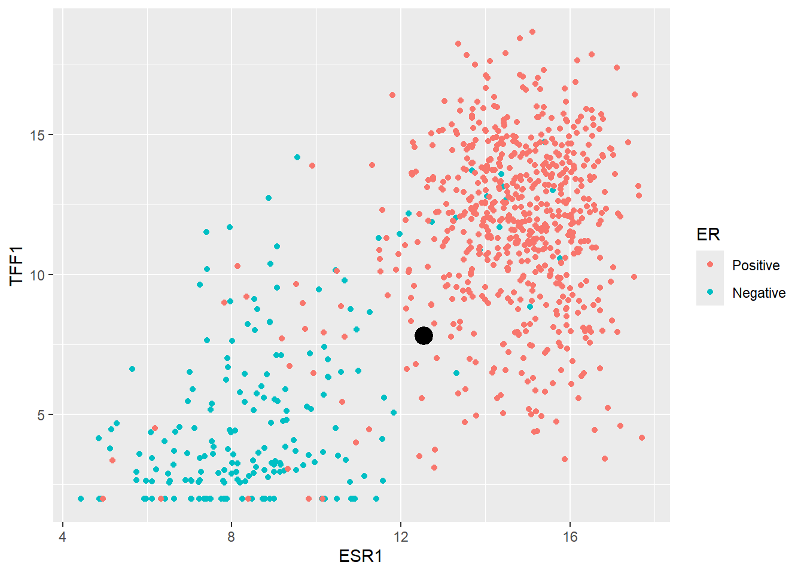
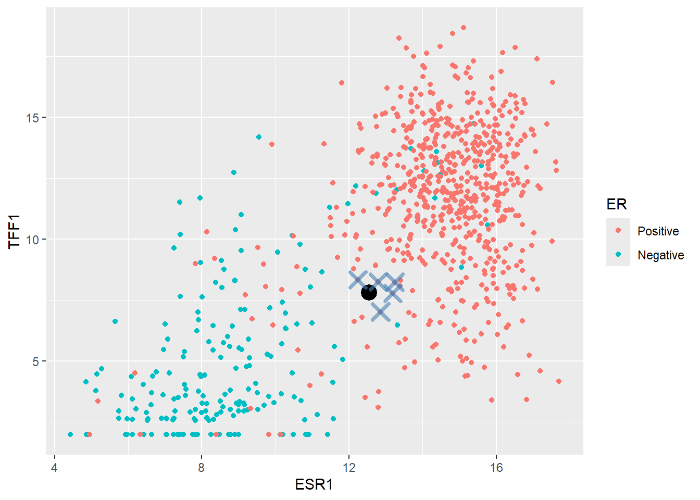
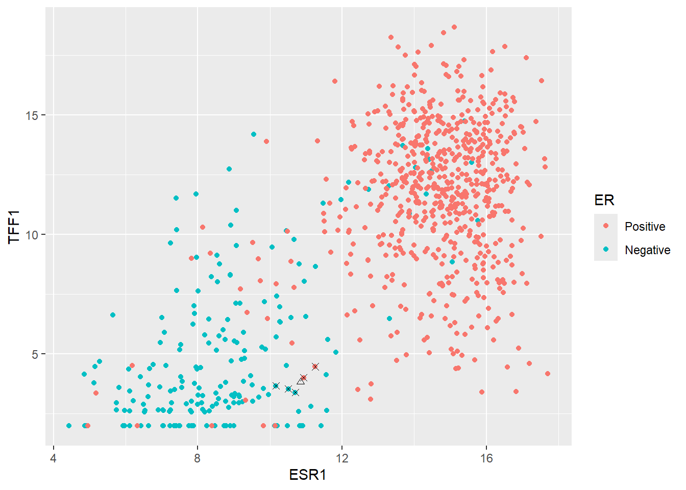
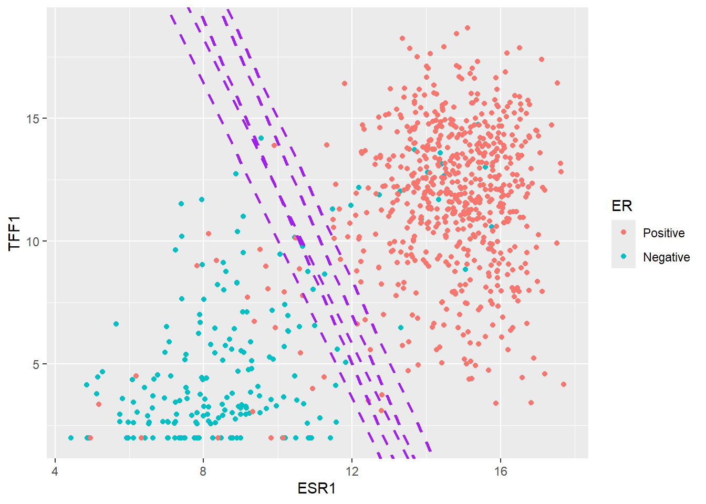
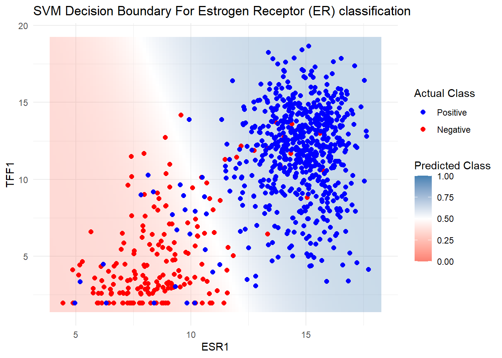
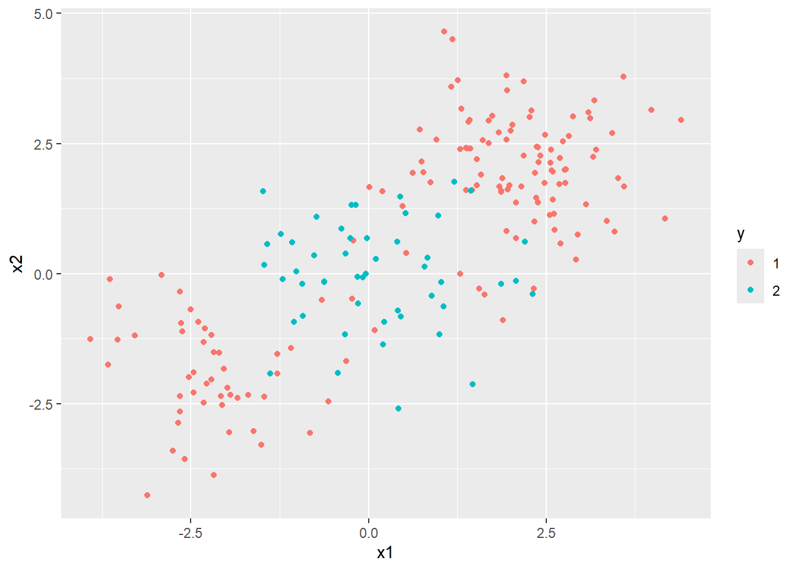
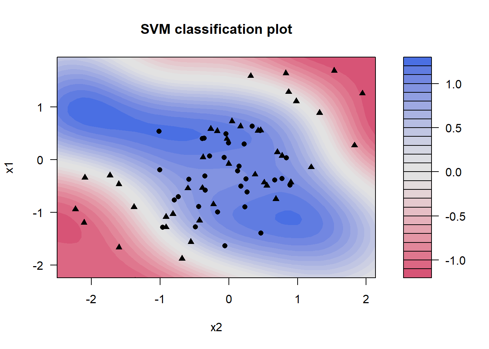

if(!require(tidymodels)) install.packages("tidymodels")
if(!require(dplyr)) install.packages("dplyr")
if(!require(ggplot2)) install.packages("ggplot2")
if(!require(skimr)) install.packages("skimr")
if(!require(purrr)) install.packages("purrr")Tidymodels for omics data: Part 3b
Two further methods for Machine Learning in R using tidymodels: K Nearest Neighbours (KNN) and Support Vector Machines (SVM)
Pre-amble
In Part 1 of this series we described how to download TCGA data for breast cancers and manipulated them using a combination of tidybulk and dplyr to retain a set of expressed, variable genes. There are a set of packages that we will need for this Part 3b:-
You will need the processed data from the Part one of this series and the code to download this is:-
### get the saved RDS
dir.create("raw_data", showWarnings = FALSE)
if(!file.exists("raw_data/brca_train_tidy.rds")) download.file("https://github.com/markdunning/markdunning.github.com/raw/refs/heads/master/posts/2025_11_06_tidymodels_TCGA_part1/brca_train_tidy.rds", destfile = "raw_data/brca_train_tidy.rds")
if(!file.exists("raw_data/brca_test_tidy.rds")) download.file("https://github.com/markdunning/markdunning.github.com/raw/refs/heads/master/posts/2025_11_06_tidymodels_TCGA_part1/brca_test_tidy.rds", destfile = "raw_data/brca_test_tidy.rds")The main purpose of this Part of the series is to introduce some other classification methods before proceeding to more complex topics to as tuning our models. First we will load the pre-prepared tidy data
brca_train_tidy <- readRDS("raw_data/brca_train_tidy.rds")
brca_test_tidy <- readRDS("raw_data/brca_test_tidy.rds")K- Nearest Neighbours (KNN)
The KNN method is fairly intuitive to understand in a two-dimensional space (i.e. when using two features for prediction), so we will pick two genes for illustrative purposes to predict ER status. The first is our favourite ESR1 followed by TFF1 which we saw gave good predictions.
er_train_simple <- dplyr::select(brca_train_tidy, ER = er_status_by_ihc, ESR1, TFF1) |>
dplyr::mutate(ER = forcats::fct_rev(ER))
er_test_simple <- dplyr::select(brca_test_tidy, ER = er_status_by_ihc, ESR1, TFF1) |>
dplyr::mutate(ER = forcats::fct_rev(ER))Intuition
We can start by plotting ESR1 against TFF1 and colouring according the ER status of each patient. These genes have been chosen deliberately to give separation into ER classes. i.e. higher ESR1 and TFF1 for a patient generally means and ER positive tumour.
ggplot(er_train_simple, aes(x = ESR1, y = TFF1, col = ER)) + geom_point()The main goal of machine learning is to try and make predictions on unseen data given the information in our training dataset. So let’s consider the first such sample in our test dataset. We will ignore the existing ER classification for this sample for now.
new_sample <- er_test_simple |>
slice_head() |>
select(-ER)
new_sample ESR1 TFF1
1 12.53109 7.824957In order to decide what ER status this sample we might be we can simply plot it on the same axes as our training data.
ggplot(er_train_simple, aes(x = ESR1, y = TFF1, col = ER)) + geom_point() + geom_point(data=(new_sample), shape = 2,col="black", size=2)
It looks like most of the training set points surrounding our new sample are Positive, therefore it makes sense to declare the new sample as Positive too. This is essentially how KNN works. It determines the “k” nearest points in the training set closest to the point to be classified and takes the majority of the classifications of the closest points.
A typical starting point is k = 5 and finding the five closest point can be achieved by calculating the difference of each observation in training data to our new sample. The distance is this case is the “euclidean” distance - that is the square root of the sum of the difference from each ESR1 and TFF1 from the new observation. All distances are then ordered from largest to smallest. The code is given below for a k of 5 but feel free to experiment with different values!
### Set k to 5 but change it if you like to see how the plot alters
k <- 5
nearest_training_samples <- er_train_simple |>
mutate(distance = sqrt((ESR1 - new_sample$ESR1)^2 + (TFF1 - new_sample$TFF1)^2)) |>
arrange(distance) |>
slice_min(distance, n = k)
ggplot(er_train_simple, aes(x = ESR1, y = TFF1, col = ER)) + geom_point() +
geom_point(data=(new_sample), shape = 2,col="black") +
geom_point(data=(nearest_training_samples), shape =4,col="black", size=2)
The method would now look at the ER label of the nearest points and calculates a proportion of Positive cases. In this instances the proportion is 1 which exceeded a default threshold of 0.5 so the new point is classified as Positive.
Now let’s look at a more difficult example:-
ESR1 TFF1
1 10.84516 3.823104When we plot this on the plot it seems to fall within a grey area between Positive and Negative cases
k <- 5
nearest_training_samples <- er_train_simple |>
mutate(distance = sqrt((ESR1 - edge_case$ESR1)^2 + (TFF1 - edge_case$TFF1)^2)) |>
arrange(distance) |>
slice_min(distance, n = k)
ggplot(er_train_simple, aes(x = ESR1, y = TFF1, col = ER)) + geom_point() +
geom_point(data=(edge_case), shape = 2,col="black") +
geom_point(data=(nearest_training_samples), shape =4,col="black", size=2) 
In this case, two of the five nearest samples are Positive so the predicted probability of Positive would be \(2/5 = 0.4\). Since this does not exceed a threshold of 0.5 (which can be changed if we want) the sample would get a Negative class.
nearest_training_samples ER ESR1 TFF1 distance
1 Positive 10.93302 3.995238 0.1932608
2 Negative 10.50824 3.529232 0.4470735
3 Negative 10.69983 3.375647 0.4704659
4 Negative 10.16436 3.656525 0.7008745
5 Positive 11.25317 4.462201 0.7582332Now we have a feeling for the method lets create a KNN model in tidymodels. This follows a hopefully familiar pattern starting with the model specification. The kknn package is the default engine for nearest neighbour classification.
There are actually various methods for calculating the class probabilities rather than the majority vote described above. To use this scheme, we set the weight_func argument to nearest_neighbour function to rectangular.
## Create a specification
knn_spec <-
nearest_neighbor(neighbors = 5, weight_func = "rectangular") |>
## a rectangular function is the majority vote discussed here
set_mode("classification") |>
set_engine("kknn")We now put everything together.
## Make the recipe to predict ER from ESR1 and TFF1
er_recipe_simple <- recipe(ER ~ ESR1 + TFF1, data = er_train_simple) %>%
step_normalize(all_predictors())
## Construct the workflow
knn_workflow <-
workflow() %>%
add_recipe(er_recipe_simple) %>%
add_model(knn_spec)
knn_fit <- fit(knn_workflow, data = er_train_simple)
knn_fit══ Workflow [trained] ══════════════════════════════════════════════════════════
Preprocessor: Recipe
Model: nearest_neighbor()
── Preprocessor ────────────────────────────────────────────────────────────────
1 Recipe Step
• step_normalize()
── Model ───────────────────────────────────────────────────────────────────────
Call:
kknn::train.kknn(formula = ..y ~ ., data = data, ks = min_rows(5, data, 5), kernel = ~"rectangular")
Type of response variable: nominal
Minimal misclassification: 0.06257379
Best kernel: rectangular
Best k: 5And for predictions we’ll do this in two steps to get the probability, and the chosen class.
er_predictions_knn <-
predict(knn_fit, new_data = er_test_simple, type = "class") |>
bind_cols(predict(knn_fit, new_data = er_test_simple, type = "prob")) |>
bind_cols(er_test_simple)
er_predictions_knn |>
slice_head(n=5)# A tibble: 5 × 6
.pred_class .pred_Positive .pred_Negative ER ESR1 TFF1
<fct> <dbl> <dbl> <fct> <dbl> <dbl>
1 Positive 1 0 Positive 12.5 7.82
2 Positive 1 0 Positive 13.3 13.8
3 Negative 0.2 0.8 Negative 9.26 1.97
4 Negative 0 1 Negative 9.83 4.98
5 Positive 1 0 Positive 14.3 14.8 We can use the accuracy and specificity and sensitivity as metrics to assess the fit, but we shouldn’t be surprised to see how well it performs on all counts.
class_metrics <- metric_set(accuracy, specificity, sensitivity)
er_predictions_knn |>
class_metrics(truth = ER, estimate = .pred_class)# A tibble: 3 × 3
.metric .estimator .estimate
<chr> <chr> <dbl>
1 accuracy binary 0.944
2 specificity binary 0.939
3 sensitivity binary 0.945We can also take a look at the probabilities. Due to the way we created the model (i.e. taking a majority vote) there are only a few possibilities, as out of the five nearest neighbours only 0, 1, 2, 3, 4 (which doesn’t seem to be the case in our example) or 5 can be Positive leading to the probabilities we see. Choosing a different weight_fun will change this behaviour and is indeed something that can be tuned to achieve the best performance. The value of k itself can also be altered.
count(er_predictions_knn, .pred_Positive)# A tibble: 5 × 2
.pred_Positive n
<dbl> <int>
1 0 29
2 0.2 21
3 0.4 5
4 0.8 13
5 1 145Finally, here is a reminder of how to construct the “ROC” curve and we are looking for a curve that is close to the top left.
roc_curve(er_predictions_knn, ER, .pred_Positive) |>
autoplot()
Support Vector Machines (SVM)
If we revisit the plot we saw earlier of ESR1 vs TFF1 we can attempt to draw a straight line where points on either side roughly fall into the Positive or Negative class. Shown here for illustrative purposes in purple are possibilities of where such a boundary might lie.

The main principle of an Support Vector Machine (SVM) is that it defines such a line that can be used to separate the data, and furthermore maxmises the distance between the line and the closest data points of either class. This maximum distance is known as the margin.
An analogy for SVM
A popular analogy for a Support Vector Machine (SVM) is that of a construction company trying to construct a road between two groups of data (in this case, our Positive and Negative samples). The centre line of the road is the SVM’s Decision Boundary; the place where the classification switches from one class to the other. The surrounding land defined by the widest possible empty gap is the margin. The primary goal of the SVM is to maximize this margin (the width of the road’s shoulders). The data points that sit exactly on the edge of this maximum margin are called the “Support Vectors”, because they are the only points that define and “support” the position of the boundary.
Setting the specification for SVM
If all that sounds a bit abstract, thankfully it is fairly straightforward to implement in tidymodels. Since our classification task is quite straightforward due to the features we have chosen, a linear boundary should work. This is specified using svm_linear. Other more complex and non-linear alternatives are availble. Like some of the other models we have seen there are some hyperparameters that can either be supplied as arguments to svm_linear and / or be decided by tuning. For now we will accept the defaults.
svm_spec_fixed <- svm_linear() %>%
set_mode("classification") %>%
set_engine("kernlab")We can now fit the model and re-use the same recipe from above that will scale our features.
svm_workflow <-
workflow() %>%
add_recipe(er_recipe_simple) %>%
add_model(svm_spec_fixed)
svm_fit <- fit(svm_workflow, data = er_train_simple) Setting default kernel parameters svm_fit══ Workflow [trained] ══════════════════════════════════════════════════════════
Preprocessor: Recipe
Model: svm_linear()
── Preprocessor ────────────────────────────────────────────────────────────────
1 Recipe Step
• step_normalize()
── Model ───────────────────────────────────────────────────────────────────────
Support Vector Machine object of class "ksvm"
SV type: C-svc (classification)
parameter : cost C = 1
Linear (vanilla) kernel function.
Number of Support Vectors : 132
Objective Function Value : -129.3322
Training error : 0.053129
Probability model included. Before we do any predictions on our test data we can see the boundary in action by first creating a large grid of theoretical values from our dataset. We can then predict the probability of belonging to either the class (Positive or Negative) for each point in the grid according to the model, and plot using a geom_tile in ggplot2. This should show the approximate location of the boundary.
grid <- expand.grid(
ESR1 = seq(min(er_train_simple$ESR1) - 0.5, max(er_train_simple$ESR1) + 0.5, length.out = 100),
TFF1 = seq(min(er_train_simple$TFF1) - 0.5, max(er_train_simple$TFF1) + 0.5, length.out = 100)
)
# Predict class probabilities for the grid
grid<- mutate(grid, prob = predict(svm_fit, new_data = grid, type = "prob")$.pred_Positive)
# Plot decision boundary + training points
ggplot() +
geom_tile(data = grid, aes(x = ESR1, y = TFF1, fill = prob), alpha = 0.3) +
geom_point(data = er_train_simple, aes(x = ESR1, y = TFF1, color = ER), size = 2) +
scale_fill_gradient2(
low = "salmon", # Color for 0% chance (Negative)
mid = "white", # Color for 50% chance (Boundary)
high = "steelblue", # Color for 100% chance (Positive)
midpoint = 0.5, # Center of the scale
limits = c(0, 1) # Ensure the scale runs from 0 to 1
) +
scale_color_manual(values = c("Positive" = "blue", "Negative" = "red")) +
labs(title = "SVM Decision Boundary For Estrogen Receptor (ER) classification",
fill = "Predicted Class", color = "Actual Class") +
theme_minimal()
Finally, for completeness we make predictions on the testing data although shouldn’t be too surprised by the performance.
er_predictions_svm <-
predict(svm_fit, new_data = er_test_simple, type = "class") %>%
bind_cols(predict(svm_fit, new_data = er_test_simple, type = "prob")) %>%
bind_cols(er_test_simple %>% select(ER))
class_metrics(er_predictions_svm, truth = ER, estimate = .pred_class)# A tibble: 3 × 3
.metric .estimator .estimate
<chr> <chr> <dbl>
1 accuracy binary 0.944
2 specificity binary 0.959
3 sensitivity binary 0.939
An aside - other types of SVM
SVM can be applied to other classification problems where data cannot be easily separated in a linear (i.e. by a straight line). Here is an example from elsewhere online
- https://emilhvitfeldt.github.io/ISLR-tidymodels-labs/09-support-vector-machines.html


Other kinds of predictor - PROOF OF CONCEPT
So far we have only looked at using RNA-seq expression data to classify our patients into ER status which are numeric quantities. For completeness it is worth mentioning that machine learning can use other information such as columns comprising text labels that can take a limited range of values; or in other words categorical variables (e.g. Yes/No, Grade 1, Grade 2). The methods we have seen so far as equally happy with categorical predictors as they are with numerical, or even a dataset containing a mixture of the two.
We will use the tumour stage, age of the patient at diagnosis, presence of progesterone receptor and ethnicity.
Important
Please just take this example as a proof of concept to show that using categorical data can be used for classification.
clin_train <- select(brca_train_tidy, Stage = paper_pathologic_stage,
Age= paper_age_at_initial_pathologic_diagnosis,
PR=pr_status_by_ihc,
ER=er_status_by_ihc,
Ethnicity=race.x)
clin_test <- select(brca_test_tidy, Stage = paper_pathologic_stage,
Age = paper_age_at_initial_pathologic_diagnosis,
PR = pr_status_by_ihc,
ER = er_status_by_ihc,
Ethnicity=race.x)Although KNN and SVM will work, we’ll try logistic regression and random forest as they will be a bit easier to interpret. The actual specification of the logistic regression model isn’t too different from before when we used the Lasso feature selection.
lasso_spec_fixed <- logistic_reg(
penalty = 0.01, # Fixed penalty (lambda)
mixture = 1 # set alpha = 1 for lasso
) %>%
set_engine("glmnet") %>%
set_mode("classification")When dealing with our RNA-seq data we performed some filtering and normalisation outside of tidymodels to remove uninformative features. Similar steps are required with the data we are using now, and clinical variables are notorious for containing missing values and inconsistent labels (as they may have been entered manually). One way of checking our data is using the skimr package.
library(skimr)
skim(clin_train)| Name | clin_train |
| Number of rows | 847 |
| Number of columns | 5 |
| _______________________ | |
| Column type frequency: | |
| character | 4 |
| numeric | 1 |
| ________________________ | |
| Group variables | None |
Variable type: character
| skim_variable | n_missing | complete_rate | min | max | empty | n_unique | whitespace |
|---|---|---|---|---|---|---|---|
| Stage | 11 | 0.99 | 2 | 9 | 0 | 5 | 0 |
| PR | 0 | 1.00 | 8 | 15 | 0 | 4 | 0 |
| ER | 0 | 1.00 | 8 | 8 | 0 | 2 | 0 |
| Ethnicity | 0 | 1.00 | 5 | 32 | 0 | 5 | 0 |
Variable type: numeric
| skim_variable | n_missing | complete_rate | mean | sd | p0 | p25 | p50 | p75 | p100 | hist |
|---|---|---|---|---|---|---|---|---|---|---|
| Age | 11 | 0.99 | 58.53 | 13.22 | 26 | 49 | 59 | 68 | 90 | ▁▆▇▅▂ |
The Age, PR and Ethnicity columns all seem to have missing values, but this doesn’t always tell the whole story as the way in which missing values are recorded can be inconsistent itself.
clin_train |>
select(-Age) |>
purrr::map(table)$Stage
NA Stage_I Stage_II Stage_III Stage_IV
18 132 474 198 14
$PR
[Not Evaluated] Indeterminate Negative Positive
1 3 272 571
$ER
Negative Positive
193 654
$Ethnicity
american indian or alaska native asian
1 47
black or african american not reported
137 78
white
584 In the PR column we have [Not Evaluated] and Indeterminate, which is effectively the same as NA, and the Ethnicity column has not reported. Also in Ethnicity we have a category with a single observation, and for the sake of practicality we will set this to NA. The Stage column has an NA string rather than R’s official NA value. skimr seemed to cope with, but to be on the safe we set it to NA.
There are steps we can use as part of our tidymodels recipe that will “impute” entries with missing information.
clin_train <- clin_train |>
mutate(PR = ifelse(PR %in% c("Positive", "Negative"), PR, NA)) %>%
mutate(Stage = ifelse(Stage == "NA", NA, Stage)) %>%
mutate(Ethnicity = ifelse(!Ethnicity %in% c("asian","black or african american","white"), NA, Ethnicity))
clin_test <- clin_test |>
mutate(PR = ifelse(PR %in% c("Positive", "Negative"), PR, NA)) %>%
mutate(Stage = ifelse(Stage == "NA", NA, Stage)) %>%
mutate(Ethnicity = ifelse(!Ethnicity %in% c("asian","black or african american","white"), NA, Ethnicity))
clin_train |>
select(-Age) |>
mutate_all(as.factor) |>
purrr::map(levels)$Stage
[1] "Stage_I" "Stage_II" "Stage_III" "Stage_IV"
$PR
[1] "Negative" "Positive"
$ER
[1] "Negative" "Positive"
$Ethnicity
[1] "asian" "black or african american"
[3] "white" clin_test |>
select(-Age) |>
mutate_all(as.factor) |>
purrr::map(levels)$Stage
[1] "Stage_I" "Stage_II" "Stage_III" "Stage_IV"
$PR
[1] "Negative" "Positive"
$ER
[1] "Negative" "Positive"
$Ethnicity
[1] "asian" "black or african american"
[3] "white" tidymodels has a variety of methods for imputing (or if you like make an educated guess at) the missing values. For numeric variables such as Age we can simply replace with the average (median in this case). Similarly, missing categorical variables can be replaced with the most common, or mode, value. I’m happy to replace Stage and ER in this way as there were not too many missing values, but Ethnicity had rather a lot more. Instead, we can add a step to include an “unknown”. This gives the model gives the model the ability to test the importance of the “missingness”, which would be useful if the values were not missing at random.
If we keep Age as a numeric value the model will try and assess the impact of each increasing year on the ER status, which is probably not what we want. Instead, we can categorise the Age into four equal groups.
Finally, the most important step is to add what are called “dummy” variables to the data. This called One Hot Encoding and is required because methods like logistic regression can’t actually work directly on categorical data and require numbers. To turn a categorical variable such as PR into numeric data it can create two new columns (PR_Positive and PR_Negative) which contain either 0 or 1 depending on whether a particular row is Positive or Negative not. i.e. if an observation is originally Positive it will have a 1 in the PR_Positive column and a 0 in PR_Negative. Using the all_nominal_predictors function this transformation is applied to all our columns.
clin_recipe <- recipe(ER ~ ., data = clin_train) |>
step_impute_median(Age) |>
step_impute_mode(Stage) |>
step_impute_mode(PR) |>
step_unknown(Ethnicity) |>
step_discretize(Age, options = list(cuts = 4)) |>
step_dummy(all_nominal_predictors())If we want to see the effect of these transformation we run a two-step process of prep followed by bake. prep() estimates or trains the recipe steps. For example, it calculates the median of Age, the mode of Stage, the cutoff points for the four Age bins, and the complete dictionary (schema) for the dummy variables. bake() then applies the rules to a data set. That is, it takes the clin_train data, and performs the steps of the recipe.
clin_recipe |>
prep(training = clin_train) |>
bake(new_data = clin_train) |>
slice_head(n = 10)# A tibble: 10 × 11
ER Stage_Stage_II Stage_Stage_III Stage_Stage_IV Age_bin2 Age_bin3
<fct> <dbl> <dbl> <dbl> <dbl> <dbl>
1 Negative 1 0 0 0 0
2 Negative 0 1 0 1 0
3 Negative 0 1 0 0 1
4 Negative 0 1 0 0 1
5 Negative 1 0 0 0 0
6 Negative 1 0 0 0 0
7 Negative 1 0 0 1 0
8 Negative 0 0 0 0 0
9 Negative 1 0 0 0 0
10 Negative 1 0 0 0 0
# ℹ 5 more variables: Age_bin4 <dbl>, PR_Positive <dbl>,
# Ethnicity_black.or.african.american <dbl>, Ethnicity_white <dbl>,
# Ethnicity_unknown <dbl>With everything in place, we can now fit the model and look at the resulting coefficients.
clin_workflow <- workflow() %>%
add_model(lasso_spec_fixed) %>%
add_recipe(clin_recipe)
# Fit the model directly to your training data
clin_lasso_fit <- clin_workflow %>%
fit(data = clin_train)
tidy(clin_lasso_fit) |>
filter(term != "(Intercept)") |>
arrange(desc(abs(estimate)))# A tibble: 10 × 3
term estimate penalty
<chr> <dbl> <dbl>
1 PR_Positive 3.86 0.01
2 Stage_Stage_IV 0.897 0.01
3 Ethnicity_black.or.african.american -0.322 0.01
4 Age_bin4 0.275 0.01
5 Stage_Stage_II -0.0928 0.01
6 Stage_Stage_III 0 0.01
7 Age_bin2 0 0.01
8 Age_bin3 0 0.01
9 Ethnicity_white 0 0.01
10 Ethnicity_unknown 0 0.01The results strongly suggest that being PR Positive is hugely associated with the ER Positive outcome, with being Stage IV is associated with ER Positive outcome (but less strongly so). On the other hand, an ethnicity of black of african american is associated with a lower log-odds or being ER Positive. Age is also weakly positive with being in the oldest age bin (vs. the youngest reference bin) slightly increases the probability of being ER Positive. I think these all make sense although the question itself is perhaps not of primary biological interest. Finally, lets see what the metrics look like:-
class_metrics <- metric_set(accuracy, specificity, sensitivity)
clin_lasso_fit |>
predict(new_data = clin_test) |>
bind_cols(clin_test) |>
mutate(ER = as.factor(ER)) |>
class_metrics(truth = ER, estimate = .pred_class)# A tibble: 3 × 3
.metric .estimator .estimate
<chr> <chr> <dbl>
1 accuracy binary 0.831
2 specificity binary 0.817
3 sensitivity binary 0.878They are actually not that bad. It shows high Accuracy with the overall rate of correct predictions and well-balanced with the Sensitivity (\(\mathbf{87.8\%}\)) and Specificity (\(\mathbf{81.7\%}\)) close to each other. This means the model is not cheating by always predicting one class. The slight edge in sensitivity means the model is slightly better at correctly identifying the Positive cases. Depending on the clinical goal, this is often desirable (i.e., prioritizing “catching” the ER Positive tumors).
For good measure, let’s try and random forest which we learnt about in Part 3a of this series.
random_forest_spec <- rand_forest(
mode = "classification",
trees = 1000 # Using 1000 trees for robustness
) %>%
set_engine("ranger", importance = "permutation")
set.seed(42)
random_forest_workflow <- workflow() %>%
add_model(random_forest_spec) %>%
add_recipe(clin_recipe)
random_forest_fit <- random_forest_workflow %>%
fit(data = clin_train)
random_forest_fit══ Workflow [trained] ══════════════════════════════════════════════════════════
Preprocessor: Recipe
Model: rand_forest()
── Preprocessor ────────────────────────────────────────────────────────────────
6 Recipe Steps
• step_impute_median()
• step_impute_mode()
• step_impute_mode()
• step_unknown()
• step_discretize()
• step_dummy()
── Model ───────────────────────────────────────────────────────────────────────
Ranger result
Call:
ranger::ranger(x = maybe_data_frame(x), y = y, num.trees = ~1000, importance = ~"permutation", num.threads = 1, verbose = FALSE, seed = sample.int(10^5, 1), probability = TRUE)
Type: Probability estimation
Number of trees: 1000
Sample size: 847
Number of independent variables: 10
Mtry: 3
Target node size: 10
Variable importance mode: permutation
Splitrule: gini
OOB prediction error (Brier s.): 0.0916587 random_forest_fit |>
predict(new_data = clin_test) |>
bind_cols(clin_test) |>
mutate(ER = as.factor(ER)) |>
class_metrics(truth = ER, estimate = .pred_class)# A tibble: 3 × 3
.metric .estimator .estimate
<chr> <chr> <dbl>
1 accuracy binary 0.845
2 specificity binary 0.854
3 sensitivity binary 0.816importance_df <- pull_workflow_fit(random_forest_fit)$fit$variable.importance %>%
enframe(name = "term", value = "Importance") %>%
arrange(desc(Importance))
importance_df# A tibble: 10 × 2
term Importance
<chr> <dbl>
1 PR_Positive 0.139
2 Ethnicity_white 0.00342
3 Ethnicity_black.or.african.american 0.00329
4 Age_bin4 0.00222
5 Age_bin3 0.00203
6 Ethnicity_unknown 0.00145
7 Stage_Stage_IV 0.00122
8 Stage_Stage_III 0.00111
9 Stage_Stage_II -0.000108
10 Age_bin2 -0.000160The metrics look to be slightly better than the Lasso, and being Positive for PR comes out as the top predictor again.
Summary
We have now added KNN and SVM to our machine learning toolkit. Whilst we used simpler data (as seen in Part 2) to illustrate the methods, they could be applied seamlessly to datasets with many more features such as the data discussed in Part 3a. Furthermore, we saw that our models can also be applied to categorical data if the need arises. This required critical pre-processing steps like One-Hot Encoding (step_dummy()) and careful handling of missing data; even using techniques like step_unknown() to test the predictive power of missingness itself.
We have now added K-Nearest Neighbors (KNN) and Support Vector Machines (SVM) to our machine learning toolkit. Whilst we used simpler data (as seen in Part 2) to illustrate the methods, they could be applied seamlessly to datasets with many more features, such as the expression data discussed in Part 3a.
Whilst our models are working well, we have often relied on arbitrary decisions about some “hyper-parameters” such as the number of trees comprising the random forest or the degree of shrinkage in glmnet. In the next part, we will move past these manual choices and see how to systematically tune our models to find the optimal settings, ensuring the highest possible performance and generalization to new, unseen data.